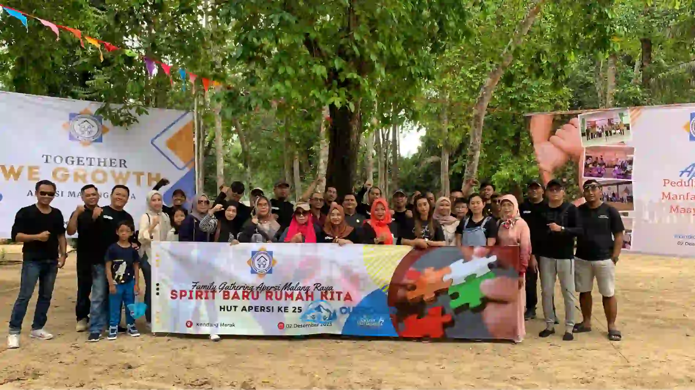

5 Manfaat Mengejutkan Outbound untuk Produktivitas Karyawan
Kegiatan outbound sejatinya adalah metode pembelajaran modern yang memanfaatkan alam terbuka. Tidak sekadar kumpul-kumpul santai, fasilitator akan menyelipkan nilai-nilai krusial yang bisa merevolusi cara kerja tim Anda. Mari kita bedah 5 manfaat mengejutkannya.
1. Meningkatkan Sinergi dan Kerjasama Tim
Dalam rutinitas kantor, karyawan seringkali terjebak dalam sekat divisi. Melalui permainan berbasis strategi seperti Paket Paintball, mereka dipaksa meruntuhkan ego sektoral demi memenangkan pertandingan. Mentalitas "Satu Tim, Satu Tujuan" inilah yang akan terbawa saat mereka kembali ke kantor.
2. Penawar Stres yang Sangat Efektif (Healing)
Tekanan deadline adalah sumber stres utama. Wisata alam terbuka seperti program Family Gathering terbukti secara medis menurunkan kadar kortisol. Menghirup udara gunung sambil tertawa lepas akan membuat karyawan siap bekerja dengan energi penuh di hari Senin.

3. Mengasah Cikal Bakal Jiwa Kepemimpinan
Pemimpin sejati ditempa dalam tekanan, bukan di ruang rapat ber-AC. Aktivitas ekstrem seperti Offroad Bromo & Batu menuntut pengambilan keputusan super cepat dan keberanian. Di sinilah Anda bisa melihat bakat-bakat pemimpin (leader) alami yang tersembunyi di dalam tim Anda.
4. Memperbaiki Kualitas Komunikasi
Sebagian besar konflik internal perusahaan berakar dari miskomunikasi. Saat mengarungi arus deras dalam program Rafting (Arung Jeram), semua awak perahu wajib saling mendengarkan dan meneruskan instruksi pemandu agar perahu tidak terbalik. Ini melatih pola komunikasi yang lugas dan akurat.
5. Membangun Loyalitas Tinggi kepada Perusahaan
Memberikan fasilitas liburan adalah bentuk apresiasi perusahaan yang paling nyata. Karyawan yang merasa kesejahteraan mentalnya diperhatikan akan memiliki ikatan emosional (loyalitas) tinggi, yang secara drastis menekan angka pergantian karyawan (turnover).
FAQ Seputar Outbound Kantor

Indriana Safitri
Konsultan HR & Event Specialist yang telah membantu ratusan perusahaan merancang program peningkatan kualitas SDM melalui metode experiential learning.